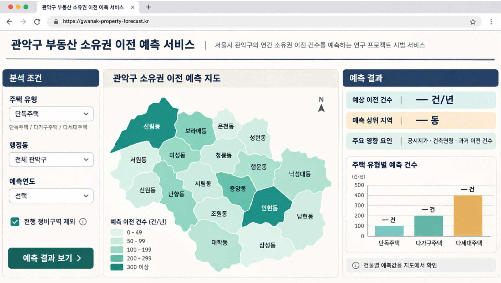

관악구 주택 유형별
소유권 이전 특성 분석 및 예측
단독·다가구·다세대주택의 소유권 이전 빈도를 공시지가·입지·정비구역 이력과 함께 읽고,
다음 1년의 이전 횟수를 예측해 지도와 그래프로 제공한다.
팀명 · 팀원 · 역할 분담
- 팀명
- LauD(Laus + IPUD)
- 팀원
- 박병주, 서정원, 이수경
- 역할 분담
- 데이터 수집 및 전처리
- 지표 개발 및 적용
- 공간분석
- 예측모형 구축
- 서비스 구상
- 발표
프로젝트 유형과 목표
프로젝트 유형 A
연구 질문
- RQ1
개별공시지가와 건축·토지·주변 환경 특성은 소유권 이전 빈도와 어떤 관계가 있는가?
- RQ2
이러한 관계는 단독·다가구·다세대주택 사이에서 어떻게 다른가?
- RQ3
정비구역에서 해제된 지역, 지정 이력이 없는 지역, 현재 지정된 지역 사이에 소유권 이전율 차이가 있는가?
가설
개별공시지가가 높고 접근성이 양호한 주택일수록 소유권 이전 빈도가 낮으며, 이러한 관련성은 주택 유형에 따라 다르게 나타날 것이다.
목표
주택 수와 관측기간을 보정한 소유권 이전율로 지역별 차이를 비교하고, 공시지가·물리적 입지 특성과 이전 빈도의 관계를 주택 유형별로 분석한다. 이후 다음 1년의 소유권 이전 횟수를 예측하여 지도와 그래프로 제공한다.
대상 및 선정 이유
관악구의 단독·다가구·다세대주택을 대상으로 한다. 동일한 자치구 안에서 주택 유형과 건축·토지·근린환경에 따른 차이를 비교하고자 한다.
사용할 데이터와 출처,
공간 단위, 기간
| 데이터 | 출처 | 주요 활용 항목 |
|---|---|---|
| 소유권 이력 | 세움터 전국 소유자 데이터: 내부 보유자료, 2025년 12월 기준 | 연간 이전 횟수, 보유기간, 과거 이전 건수 |
| 건축물 특성 | 건축HUB 건축물대장 표제부·전유부·층별개요 | 사용승인일, 건축연령, 대지면적, 건축면적, 건축물 용도, 동·호 식별정보, 용도별 연면적. 공공데이터포털 |
| 토지 및 지가 | V-world 토지특성정보·개별공시지가·토지이용계획 자료 | 도로접면, 지형고저, 필지 형상·면적, 용도지역, 개별공시지가와 기준연월. 공공데이터포털 |
| 정비사업 현황과 고시 | 서울 열린데이터광장 도시계획 정비사업 현황·결정고시 정보 | 구역명, 사업 및 고시 식별정보, 지정·변경·해제 시점 확인. 두 자료의 고시관리코드를 연결하여 활용한다. data.seoul.go.kr |
| 과거 정비구역 이력 | 서울시 과거 해제지역 현황, 토지이음 고시목록·고시 원문·지형도면 | 과거 지정·해제 이력과 경계 보완. 고시목록에서 고시번호·고시일·제목·원문 링크를 확인한다. data.go.kr |
| 접근성 및 공간 기준 | 서울시·국토교통부·V-world 등의 공간자료 추가 확보 | 지하철 출입구와 개통 이력, 보행도로망, 건축물·필지·행정동 경계 |
- 기본 분석 단위
- 개별 부동산 × 연도. 단독·다가구는 건물, 다세대는 전유호를 기준으로 한다.
- 공간 집계 단위
- 행정동을 기본으로 하며, 100m 격자 결과를 함께 비교한다.
- 관측기간
- 2015년 1월~2025년 12월.
- 예측기간
- 2025년 말까지의 정보를 이용한 2026년 1월~12월 예측.
- 좌표계
- 거리·면적 계산에는 EPSG:5179 사용.
사용할 지표
①소유권 이전 횟수와 이전율
개별 부동산의 연간 소유권 이전 횟수를 산출하고, 행정동·격자·주택 유형·정비구역 집단 간 비교에는 부동산 100개당 연간 소유권 이전율 사용.
단독·다가구는 건물 관측연수, 다세대는 전유호 관측연수를 분모로 사용.
②설명변수
| 구분 | 사용할 변수 |
|---|---|
| 지가 | 개별공시지가 |
| 건축 특성 | 건축연령, 대지면적, 건축면적 |
| 토지 및 입지 | 용도지역, 도로접면, 지형고저, 필지 형상 |
| 이전 이력 | 보유기간, 과거 소유권 이전 건수 |
| 접근성 | 최근접 지하철 출입구까지의 최단 보행거리 |
| 근린환경 | 건물 주변 50m·100m의 용도별 연면적 비중과 용도혼합도 |
| 정비구역 이력 | 해제 지역 / 지정 이력 없음 / 현재 지정 지역 |
용도 혼합도
용도 혼합도 계산: 주변 건물의 주거·상업·업무·기타 등 용도로 Normalized Shannon Entropy Index를 활용하여 용도 혼합도 계산.
pk: 용도 k의 연면적 비중 · K: 용도 범주 수. 0이면 한 용도만 있고 1에 가까울수록 고르게 섞여 있다.
정비구역의 세 집단 분류 기준
- 해제 지역
- 과거 정비구역 지정 이력이 있으나, 기준 시점에는 해제되어 미지정 상태인 지역
- 지정 이력 없음
- 확인 가능한 자료에서 기준 시점까지 정비구역 지정 이력이 확인되지 않는 지역
- 현재 지정 지역
- 기준 시점에 정비구역으로 지정된 지역. 해제 후 재지정된 곳도 포함
- 연간 비교와 예측변수는 각 연도의 직전 연말 상태를 기준으로 구성.
- 건물 유형별로 모형 별도로 구성
공간분석 기법
01공간결합 및 집계
건축물·필지와 행정동·정비구역 경계를 중첩하여 소속과 이력을 부여한다. 주택 유형별 행정동·100m 격자 이전율을 산출하고 집계 단위에 따른 차이를 비교한다.
02버퍼 기반 근린환경 분석
건물 주변 50m·100m에서 용도별 연면적 비중과 용도혼합도를 산출한다. 범위에 따라 이전 빈도와의 관계가 달라지는지 확인한다.
03보행 네트워크 접근성 분석
최근접 지하철 출입구까지의 최단 보행거리를 계산한다. 당시 개통한 역을 적용하며, 보행망 확보가 어려우면 직선거리로 대체하고 명시한다.
04공간 자기상관 분석
주택 유형별 행정동·격자 이전율에 Global Moran’s I와 LISA를 적용하여 공간적 군집과 이상치를 확인한다. 분모가 작은 지역의 결과는 불안정성을 점검한다.
05정비구역 이력에 따른 비교
세 집단을 주택 유형별로 나누어 이전율과 연도별 변화를 비교한다. 지정·해제 시점을 함께 표시하여 변화 양상을 살펴본다.
예측 대상(y)과 후보 모형
예측 대상 (y)개별 부동산의 다음 1년간 소유권 이전 횟수.
- 관측 가능한 부동산 중 이전이 발생하지 않은 경우도 0회로 포함.
- 단독·다가구·다세대별로 모형을 따로 구축하며, 각 모형에 정비구역의 세 범주를 설명변수로 반영
| 주택 유형 | 예측 단위 | 기준모형 | 비교모형 |
|---|---|---|---|
| 단독주택 | 건물 × 연도 | Ridge 회귀 | Random Forest 회귀 |
| 다가구주택 | 건물 × 연도 | Ridge 회귀 | Random Forest 회귀 |
| 다세대주택 | 전유호 × 연도 | Ridge 회귀 | Random Forest 회귀 |
평가·해석
주택 유형별 MAE·RMSE로 예측 성능을 비교한다. Ridge 회귀계수와 Random Forest 변수 중요도를 확인하고, 입지·건물 변수만 사용한 모형과 개별공시지가를 추가한 모형의 성능도 비교한다.
학습·검증
전년도 정보로 다음 해를 예측하도록 구성한다. 예를 들어 2015년을 최초 입력 시점으로 사용하고, 예측 대상 연도 기준으로 2016~2021년은 학습, 2022~2023년은 검증, 2024~2025년은 최종 시험에 사용한다. 설정값 조정에는 최종 시험자료를 사용하지 않는다.
예측 대상 연도 기준. 각 연도는 직전 연도까지의 정보로 예측한다.
서비스 화면 스케치

사용자가 조작하는 항목
- 연도·기간
- 2015~2025년 관측기간 선택, 2026년 미래 예측
- 주택 유형
- 단독주택 / 다가구주택 / 다세대주택
- 정비구역 이력
- 전체 / 해제 지역 / 지정 이력 없음 / 현재 지정 지역
- 지역
- 관악구 전체 / 행정동 선택
- 공간 단위
- 행정동 / 100m 격자
사용자가 얻는 결과와 화면 구성
- 왼쪽 조건 패널
- 연도·주택 유형·정비구역 이력·행정동·표시 지표 선택
- 중앙 지도
- 선택 조건의 관측·예측 이전율 지도와 정비구역 경계·해제 이력
- 오른쪽 요약
- 해당 지역의 이전율, 이전 건수, 분석대상 수, 공시지가, 건축연령, 접근성, 용도혼합도
- 하단 그래프
- 연도별 이전율 변화, 주택 유형별·정비구역 집단별 비교, 지가·입지 특성과 이전 빈도의 관계
- 예측 비교 화면
- 2026년 예상 이전율·예상 건수, 실제값이 확보된 시험 연도의 실제−예측 이전율 지도